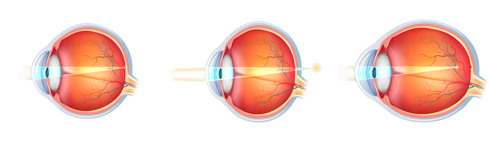
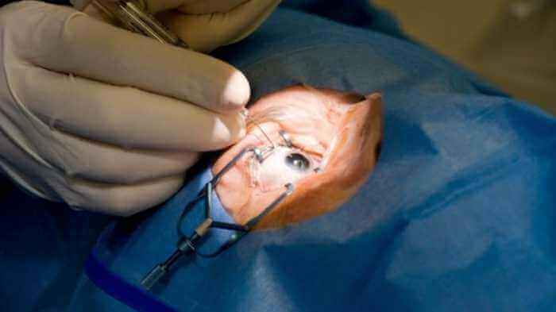

NACHRICHTEN DER MEDIZIN
Eine Lasersichtkorrektur ist nicht mehr erforderlich
Laut Statistik hat jeder dritte Europäer Sehprobleme. Laut einer Meinungsumfrage aus dem Jahr 2017 sind die meisten Menschen nicht dagegen, auf Kontaktlinsen und Brillen zu verzichten, möchten es aber ohne chirurgische Eingriffe tun. Heute ist es endlich möglich geworden, diesen Wunsch zu erfüllen!
Normales Sehvermögen
Kurzsichtigkeit
Weitsichtigkeit
Augenchirurgie: Was sind die Folgen?
Die Lasersichtkorrektur verliert schnell an Dynamik. Adrian Feraru, ein unabhängiger Experte für Augenheilkunde, bringt diese Situation mit der zunehmend negativen Ergebnissen bei Operationen zur Wiederherstellung des Sehvermögens in Verbindung.
“Qualitativ hochwertige Sehkorrektur kostet viel Geld, zehn und sogar fünfzehn mal mehr als das Existenzminimum der Deutschen. Auf der Suche nach alternativen Behandlungsmethoden suchen Menschen nach Alternativen und wenden sich häufiger an Kliniken mit veralteter Ausrüstung.
Statistiken der Weltgesundheitsorganisation berichten, dass etwa 45 Millionen Einwohner unseres Landes Sehprobleme haben. Und nur 11% von Ihnen können sich eine teure Behandlung, wie die Laserkorrektur leisten.
Es kommen Patienten zu mir, die nach der Operation 5-7 Einheiten ihrer Sehschärfe verloren haben. Leider ist es in solchen Fällen bereits unmöglich, das natürliche Sehen wiederherzustellen. Für den Rest ihres Lebens werden diese Menschen gezwungen sein, eine Brille mit dicken Gläsern zu tragen”.
Operationen zur Wiederherstellung des Sehvermögens werden nicht immer erfolgreich abgeschlossen
Volksmethoden helfen Ihnen dabei das Sehvermögen wiederherzustellen
Es gibt viele Volksmethoden zur Wiederherstellung des Sehvermögens. Dazu gehören Augengymnastik, Verzehr von Obst und Gemüse, die reich an Vitamin A, B1, B2, B12, C und anderen sind.
Entgegen der landläufigen Meinung ist es unmöglich, die Sehschärfe der Augen auf diese Weise wiederherzustellen. Der Grund dafür ist, dass Sie so viel davon essen müssen, dass es nicht einmal in den menschlichen Magen passt.
Zum Beispiel 10 Kilogramm Karotten oder 15 kg Blaubeeren täglich. Darüber hinaus wird nicht jedes Vitamin verdaut, da es eine Reihe von Besonerheiten für jedes Element gibt, die bei der Einnahme beachtet werden müssen.
So wird Ribophorin (Vitamin A) bei Rauchern und Alkoholikern schlecht resorbiert, ebenso wie bei wenig Vitamin E und Zink. Vitamin A wird jedoch auch bei Menschen mit einem gesunden Lebensstil nur bei gleichzeitiger Einnahme mit einer ausreichenden Menge an Fett aufgenommen.
Die Selbstverabreichung von reinen Vitaminen aus einer Apotheke bewirkt in der Regel das Gegenteil und führt zu einer Hypovitaminose, was zu einer verminderten Sehkraft führt.
Es ist fast unmöglich, genug Vitamine für eine gute Sehkraft aus der Nahrung zu bekommen.
Moderne Methoden der Wiederherstellung der Augen
Europas führende Augenärzte haben ein Mittel entwickelt, das in Naher Zukunft die Laserkorrektur vom Markt drängen wird. Auf dem europäischen Markt steht das Medikament unter dem Namen zum Verkauf.
In nur einem Jahr hat es mehr als 100 tausend Menschen geholfen, die Brille abzulegen und auch die Kontaktlinsen für immer aufzugeben. Wissenschaftler haben mehr als 7 Jahre damit verbracht, es zu entwickeln. In den nächsten 4 Jahren wurden klinische Experimente durchgeführt.
Die beispiellose Effektivität des Arzneimittels beruht auf einer Zusammensetzung, die keine Analoga hat, einschließlich Extrakten aus Ginkgo Biloba, Blaubeeren, Johanniskraut und der Teufelskralle.
Eine wichtige Rolle bei der Herstellung von Kapseln spielte die Kaltwasserextraktion, mit der die biochemische Zusammensetzung von Vitaminen vollständig erhalten werden konnte.
Die Wirkstoffe des Arzneimittels sind in der Lage, den Vitaminspiegel, der für das Sehen notwendig ist, innerhalb von 2 bis 4 Wochen auf ein gesundes Niveau anzuheben. Während dieser Zeit wird das Gleichgewicht der für die Sehschärfe verantwortlichen Spurenelemente ausgeglichen.
Dies führt zu einer natürlichen Stabilisierung des Augendrucks und stärkt die Augenmuskulatur, die Netzhaut und verbessert das Sehvermögen bis auf eine Einheit.
13 Kommentare
Meine Tochter benutzt es regelmäßig und ist sehr zufrieden. Die Kontaktlinsen braucht sie nicht mehr...
Habe gestern das Paket mit von der Post abgeholt. Der Versand war schnell, alles top. Fange jetzt mit der Behandlung an.
Kümmere mich um meine Augen. Nehme schon die zweite Woche ein und die Sehkraft wird IN DER TAT besser! Ich bin so froh!
Habe eine Bestellung gaufgegeben und warte nun auf das Paket :)
Habe zwei Wochen lang eingenommen und die Sehkraft hat sich von -4 auf - 2 verbessert! Vielen Dank!!!!
Habe mit einen Behandlungskurs absolviert und meine Sehkraft liegt jetzt bei 1! Ich bin einfach sprachlos!
Nehme es eine Woche lang ein und es gibt schon die ersten Ergebnisse. Die Sehkraft ist deutlich besser geworden! Versuche jetzt keine Brille zu tragen.
Mir ist es gelungen meine Sehkraft in nur 4 Wochen von -5 bis auf -2 zu verbessern. Hätte gerne aber noch die -1)). Manchmal vergesse ich es aber die Tablette rechtzeitig einzunehmen. Werde aber versuchen den Behandlungskurs abzuschließen)
Ich vergesse auch immer eine Tablette einzunehmen. Trotz dessen ist meine Sehkraft dank besser geworden. Von +1,5 auf 0,8
Könnt mir gerne gratulieren, ich habe meine Sehkraft vollständig wiederhergestellt! Kann es selbst kaum glauben!!! Habe gestern einen Sehtest gemacht und es lag bei EINS! Mein Mann hat auch angefangen einzunehmen, obwohl er nicht so eine schlechte Sehkraft hat, wie ich.
Freunde, ich hoffe ihr werdet auch so ein Glück haben, wie ich. Noch vor 12 Tagen lag meine Sehkraft bei -2 und jetzt bei 0.8. Danke an die Entwickler. Viel Glück an alle!
Meine Tante hat eingenommen und hat gerade erst den Kurs abgeschlossen. Die Sehkraft hat sich von -3,5 bis auf 1 verbessert. Wir sind alle so glücklich für sie.
Das Medikament ist super und vor allem einfach in der Anwendung und hat eine schnelle Wirkung. 5 +++ für den Artikel ;) War gestern beim Augenoptiker und er war einfach schockiert von solch einem Ergebnis.
Danke für den Artikel. Ist wie immer sehr nützlich. Werde jetzt wohl auch eine Bestellung aufgeben.